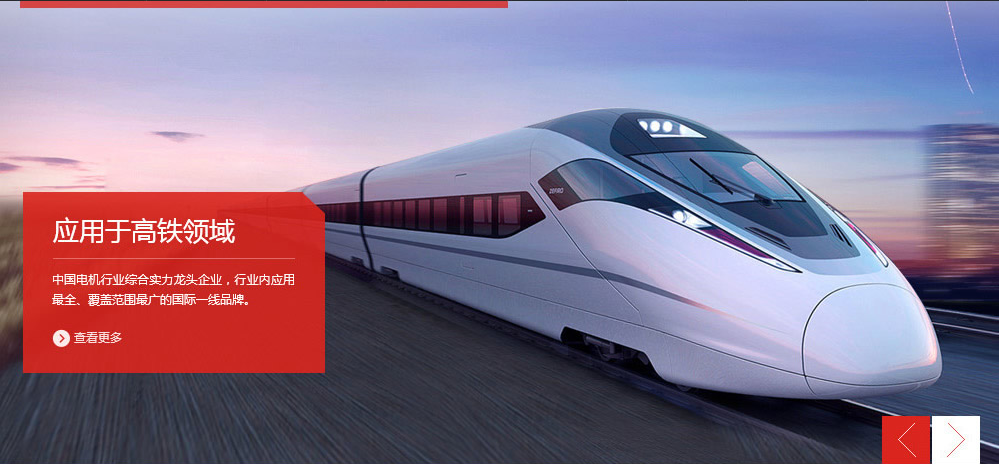
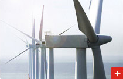

集團介紹
產品中心
臥龍市場
技術研發
國際合作
投資者關係
新聞資訊
人力資源

新聞資訊
江啟臣回應國台辦：復交案「明辨是非」 不違親美和陸
2013-07-30
主導國民黨提台美復交、抗中 江啟臣：這是民意！
2013-07-30
港府撤銷宣揚港獨教師資格 黃之鋒：全面清算開始
2013-07-30
胡錫進最深層恐懼曝光 中媒爆:怕家族移民海外被發現痛失一切
2013-07-30
臉書不忍了！宣布封殺極右陰謀論團體「匿名者Q」
2013-07-30
認證東山咖啡豆 農業局允補助咖啡館採購每公斤300元
2013-07-30
臥龍介紹
公司成立於1984年，經過近30年的發展
已成為電氣製造，房地產開發和金融投資三業並舉的綜合性跨國...
人才招聘
培養一流的人才，鑄造一流的工程實現員工與企業的共同發展
臥龍市場
交通軌道:由於主要採用電氣牽引，而且輪軌摩擦阻力較小，與公共...

節能環保:由於不斷上漲的能源消耗和我們的專業知識，維護可持續...
航空與船艦:如果你是在公海行駛，你需要確保你的船隻的電力系統...
石油，天然氣及採礦:在市場豬的安全性，可靠性，效率和最短的停機...